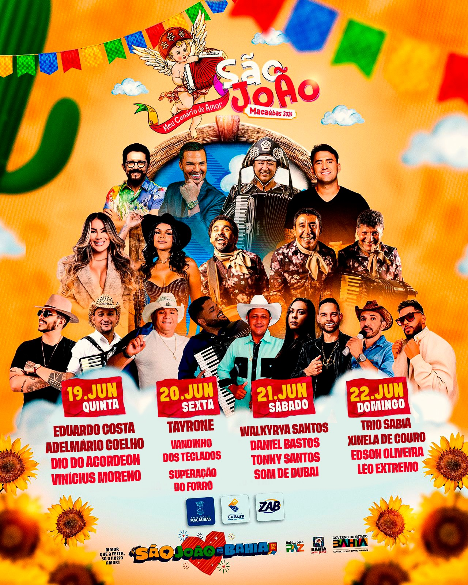

A festa começou com o Festival de Quadrilhas, que encantou o público com coreografias, figurinos e muito brilho, celebrando a cultura junina com emoção e criatividade. Na sequência, nos dias 19 a 22 de junho, a cidade viveu quatro noites inesquecíveis de shows, forró, comidas típicas e tradição, reunindo a comunidade e visitantes em um São João vibrante e acolhedor. Foi um verdadeiro espetáculo de cultura nordestina, deixando memórias marcantes para todos! 🌽🔥💃
